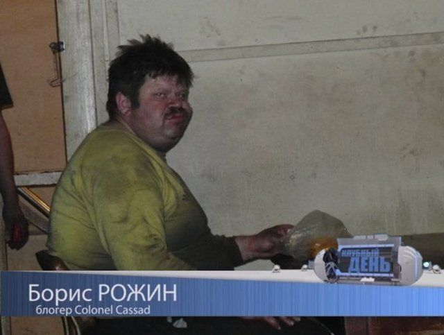

ПОРТАЛ ЗАПУЩЕН!
Доброе утро мои друзья.
Доброе утро мои друзья.
ХОУ ИТ ФИЛС ВАЙБКОДИТЬ И ТРАТИТЬ ПОСЛЕДНИЕ РЕЗЕРВУВАРЫ ВАДЫ В АФРИКЕ НА ПРСТЫ С АНИМЕ ПИКЧАМИ
ВЕКАМИ СЧИТАЛОСЬ ЧТО ЛИШЬ ИСТИННОЕ ПОНИМАНИЕ ЭТО СИЛА А НЕ ТОЛЬКО ОБОБЩЕННОЕ ЗНАНИЕ, НО ВЕЛИКОЕ ПРИТВОРСТВО, ЛАРПИНГ ЭТО СИЛЬНАЯ АУРА В СЕТИ. Я ЭТО ВЫЯВИЛ В ХОДЕ ИЗУЧЕНИЕ ИЛИ СОУ КАЛЛЕД ЛАРПИНГА ЛАНДОВСКОЙ НУМОГРАММЫ. LARP РАСКЛАДЫВАЕТСЯ В ЧИСЛО 83 И ПОПАДАЕТ В ЗОНУ 2 И ЗАПУСКАЕТ ПОТОК ЭНЕРГИИ К ЗОНЕ 5 ЧЕРЕЗ ДЕМОНА 7::2. 8+3=11 СЛЕДРВАТЕОЬНО 1+1=2 ПРИЗЕМЛЯЕТСЯ ВО ВТОРУЮ ЗОНУ. ИЩЕМ ПАРУ ДЛЯ ВТОРОГО. 9-2=7 МУТАЦИЯ 7-2=5 УСТРЕМЛЕЯЕТСЯ К ПЯТОЙ ЗОНЕ УДЕРЖИТЕНЛЬ ВЛАСТИ ЮПИТЕР..

ВОЕНКОР КОЛОНЕЛ КАССАД СОЖРАЛ ДВУХ ПЯТИСОТИКОВ КОТОРЫЕ ОТКАЗАЛИСЬ ДЕЛАТЬ НАМАЗ, ТАК ЬУДЕТ СО ВСЕМИ ПРЕДАТЕЛЯМИ. ПРОДВИЖЕНИЕ У ЛИТРУХИ ПУТИНКИ, ПОКА РАНО ОБ ЭТОМ ГОВОРИТЬ, НО ВОЗМОЖНО ФРОНТ ПРОТИВНИКА ОБРУШИТСЯ.
СНАЧАЛА ЗАДАЙТЕ СЕБЕ ВОПРОС СИНИСТЕР БЛУД ЛИ ВЫ ИЛИ ИНТЕРНЕТ ГЕРОЙ. ЕСЛИ ВЫ СИНИСТЕР БЛУД ТО ВАМ ПОНАДОБИТСЯ 1. ЛЮБОЙ СТАРЫЙ НОУТБУК С X86-64 ПРОЦЕССОРОМ ( БЕРИТЕ НОУТБУК БЕЗ INTEL ME), USB 3.0 ПОРТОМ И СОБСТВЕННО САМА ФЛЕШКА (ЛЮБАЯ НО НЕ БОЛЬШЕ ОБЬЕМА 64 ГИГА) . 2. РОУТЕР С ОТКРЫТОЙ ПРОШИВКОЙ (РЕКОМЕНДУЮ DD-WRT) ПОДКЛЮЧЕНИЕ ПО КАБЕЛЮ ETHERNET. С РОУТЕРА ПОДКЛЮЧИТЕСЬ К ВПН (ЛЮБОЙ ВПН КОТОРЫЙ ПРИНИМАЕТ ОПЛАТУ КРИПТОЙ) ЗАТЕМ УСТАНОВИТЕ TAILS OS НА ФЛЕШКУ (ПОГУГЛИТЕ КАК) НАСТРОЙКИ "SECURITY SETTINGS" TOR BROWSER НА МАКСИМУМ, ИСПОЛЬЗУЙТЕ МЕНЕДЖЕР ПАРОЛЕЙ ДЛЯ ХРАНЕНИЯ И ГЕНЕРАЦИИ СЛОЖНЪХ ПАРОЛЕЙ, ИСПОЛЬЗУЙТЕ ШИФРОВАНИЕ СООБЩЕНИЙ OTR ИЛИ GPG. НА ЭТОМ ВЫ ПОЧТИ ДОТЯГИВАЕТЕ ДО ОПСЕК УРОВНЯ БОХ, ЕСЛИ ВЫ ПРОСТО ИНТЕРНЕТ ГЕРОЙ ТО ОС UBUNTU+ТОР БРАУЗЕР И БАНАЛЬНО НЕ ВЕДИТЕ ЛИЧНЫЕ СОЦСЕТИ, ВАС НЕ НАЙДУТ ИБО ВЫ НИКОМУ НЕ НУЖНЫ.